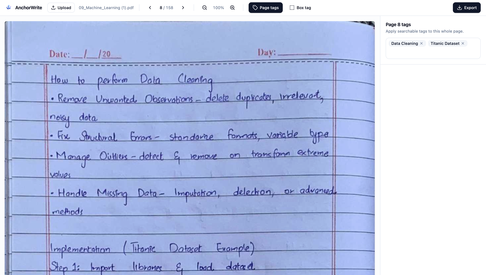
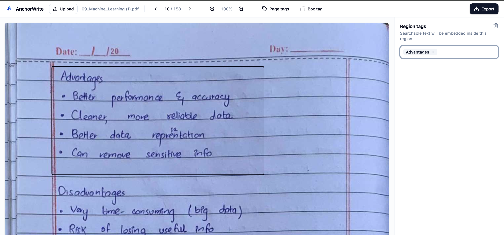
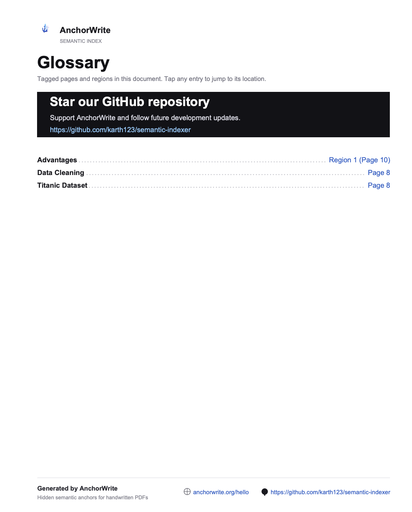
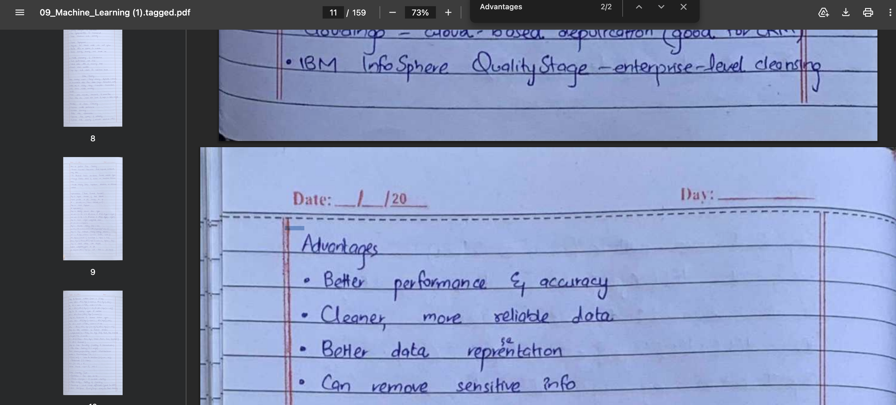

AnchorWrite is a lightweight, client-side application to index handwritten notes.
Problem
As a researcher who uses symbolic mathematics a lot, I make a lot of handwritten notes, whether for courses or for my own research. One problem which I routinely faced while making handwritten notes is finding the right page where a particular concept I am thinking about is present.
Usual software attempts to transcribe the entire handwritten text using OCR or VLM technology to make the text searchable. For example: Apple’s pdf reader sometimes can perform copy paste on scanned documents (Due to this internal OCR conversion). This comes with several problems:
It rarely works: OCR technology is not mature for handwritten notes. Handwriting varies per person and personally for my handwriting, it barely works.
It is expensive if it works: To make it work reliably, one must use VLMs, which are trained on a larger corpus of handwritten texts. This is not scalable as a free, OSS product due to costs.
It requires server-side computing: For those who have privacy concerns, handing over their documents which is uploaded to a server outside their control is a red-line, regardless of the TOS of the site. This gets even more complicated if the server upload is cross-border, where legal restrictions can come into play.
Solution
The solution proposed by AnchorWrite is a simple client-side application which facilitates the smooth indexing of these handwritten documents. Instead of relying on fancy OCR or VLM technologies, you index the documents by hand right after completing the notes. This leverages certain human cognitive learning traits:
After completing notes, the mind is fresh: You know what the right keywords to index are.
It acts as a quick review of the material which improves retention
It is relatively speedy to do (Due to our simple interface)
A simple investment of 5-10 minutes in indexing notes, pays off immensely down the line.
Philosophy of the solution
This is intended to be a free forever OSS product. It is entirely client-side, runs on your browser, has no sign up or cookies. In effect it is your own application.
There are two ways to index notes. You can either opt for page level tags where you assign keywords to a page) or region tags (Box tags) where you assign keywords to a region in a page. To prevent any kind of lock-in to the product, we allow for export back into the pdf format, and resuming progress by importing the document again.
Finally, after exporting the pdf, a glossary is generated on the front page, containing all the keywords which were embedded in pages and in the regions you selected. When you click the link in the glossary, it will navigate to the page/region where you saved the tag. This solves a major problem where someone may not have the concept keyword on the tip of their tongue, but a review of the glossary rejigs their memory.
Also, if you use Ctrl-F (Search) on this pdf, you will be able to find the keywords in the various locations you added them.
Technical Implementation
Page Level Indexing: In the below image, we demonstrate page level tagging. One can type multiple tags and save it on a particular page.

Region Level indexing:

In the above image, we show how one can select a region in the pdf using the box tag feature and assign tags to that region.
Glossary:
After exporting the pdf, a glossary is created of all keywords which were used.

Search (Ctrl-F):
You can search your keywords in your pdf reader itself by using the search shortcut. The keywords are embedded in a hidden layer in the pdf, either at the top right (for page tags) or slightly above the region you tagged.

I hope this product is useful for any students, researchers or anyone who deals with hand-written documents on a regular basis.
The product can be accessed at this link: https://anchorwrite.org
The repository can be accessed here: Github